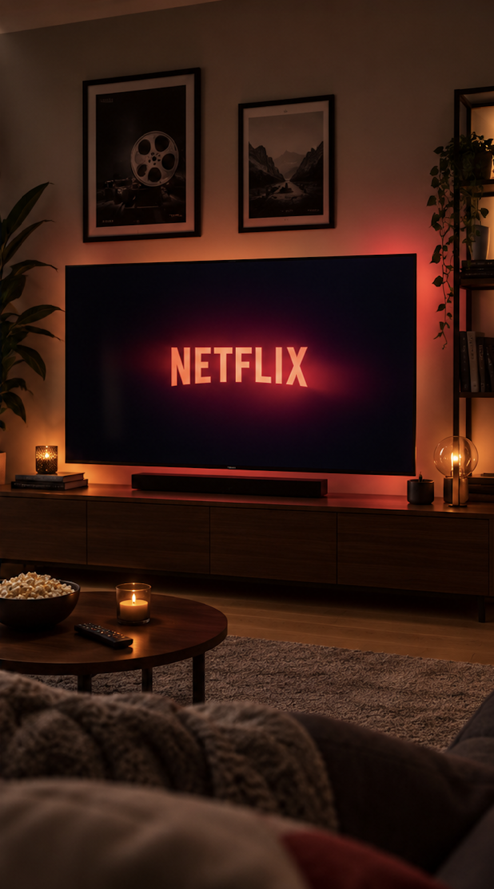
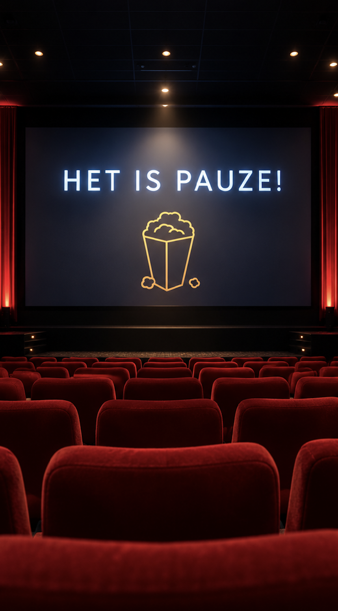
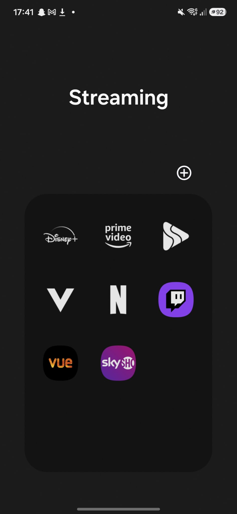

Filmbeleving is de manier waarop een kijker een film ervaart en beleeft. Hierbij spelen verschillende factoren een rol, zoals het verhaal, de personages, de muziek, de beeldkwaliteit en de omgeving waarin een film wordt bekeken. Ook de bioscoop, streamingdiensten en sociale media kunnen invloed hebben op de filmbeleving. Vooral spoilers en filmclips op sociale media kunnen ervoor zorgen dat belangrijke gebeurtenissen al bekend zijn voordat iemand de film heeft gezien. Hierdoor kan het verrassingseffect van een film verminderen.
De manier waarop films worden bekeken is door de komst van streamingdiensten en sociale media sterk veranderd. Films zijn gemakkelijker toegankelijk geworden, maar het grote aanbod kan er ook voor zorgen dat kijkers minder aandacht besteden aan afzonderlijke films. Daarnaast speelt commerciële aantrekkelijkheid een belangrijke rol bij het maken en verspreiden van films. Ondanks deze veranderingen blijven verhaal, personages en de persoonlijke ervaring van de kijker belangrijke onderdelen van filmbeleving.


